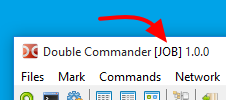

启动 Double Commander 时，我们可以指定一些命令行参数来定制启动功能。
例如，我们可以指定将在文件面板中显示的目录。
还有一些开关也可以使用。
这些开关不区分大小写。
这里是命令行中可能的语法的总结描述：
doublecmd.exe [-C] [-T] [-p L|R] [path1\subpath1] [path2\subpath2]
另一种形式也可以像这样：
doublecmd.exe [-C] [-T] [-p L|R] [-L path1\subpath1] [-R path2\subpath2]
注意：macOS 命令行有一些特性，使用 open 命令时需提供完整的应用程序名称（“Double Commander” 和 -a）以及
--args 来传递参数。对于第二个及后续实例，添加 -n。
以下是启动Double Commander时可能作为参数存在的列表。
| 命令行参数 | |
|---|---|
| 参数 | 描述 |
|
path1\sub1 [path2\sub2]
（没有开关，直接一条路径） |
如果一条路径通过了，那么将其加载到活动面板中。 如果传递了两个路径，则将第一个路径加载到左侧面板，第二个路径加载到右侧面板。 目录名称包含空格时必须用双引号括起来。 始终指定完整路径名。 |
|
-C 或 --client
|
如果Double Commander已经在运行，请激活它并将路径通过命令行传递给该实例。 |
|
-L 目录
|
将目录设置为在左侧面板中显示。 |
|
-R 目录
|
设置目录以在右侧面板中显示。 |
|
-p L|R
|
程序启动时设置活动面板：
|
|
-T
|
在新标签页中打开传递的目录。 |
|
--config-dir=路径
|
设置自定义目录路径与 DC 配置文件。 |
|
--servername=x
|
设置实例（服务器）DC 的名称，然后可以用来传递参数。
如果没有现有实例，则创建它。 如果已经存在实例，并且当前实例是客户端，则将参数发送到服务器（即发送到现有实例）。 如果已经存在实例，并且当前实例不是客户端（即 一次只允许一个 DC 副本 为假，并且没有提供
如果已经有一些尾随数字，则将其增加 1，直到找到一个尚未繁忙的服务器名称，然后使用该服务器名称创建实例。 |
|
--no-splash
|
在启动时禁用启动画面 DC。 |
|
--debug-log=文件 |
运行 Double Commander 并将调试输出发送到指定文件。
还使用的模块（Lazlogger）支持环境变量
在 linux 中，最好在终端中运行并将输出重定向到文件（包括标准输出和标准错误流）。 |
注意：如果指定的是完整文件名而不是目录，Double Commander将打开该文件夹并将光标移动到该文件。
以下是一些在启动Double Commander时可以通过命令行参数实现的期望行为示例。
在左侧面板中打开目录 e:\Xilinx\iSE DS，在右侧面板中打开目录 c:\temp：
doublecmd.exe "e:\Xilinx\iSE DS" c:\temp
在已经运行的 Double Commander 实例的活动面板中，在新标签页中打开目录 c:\Logs：
doublecmd.exe -c -t c:\Logs
从目录 f:\Documents\DC\Job Settings 启动应用程序，标题栏中提及 JOB
doublecmd.exe --config-dir="f:\Documents\DC\工作设置" --servername="JOB"
